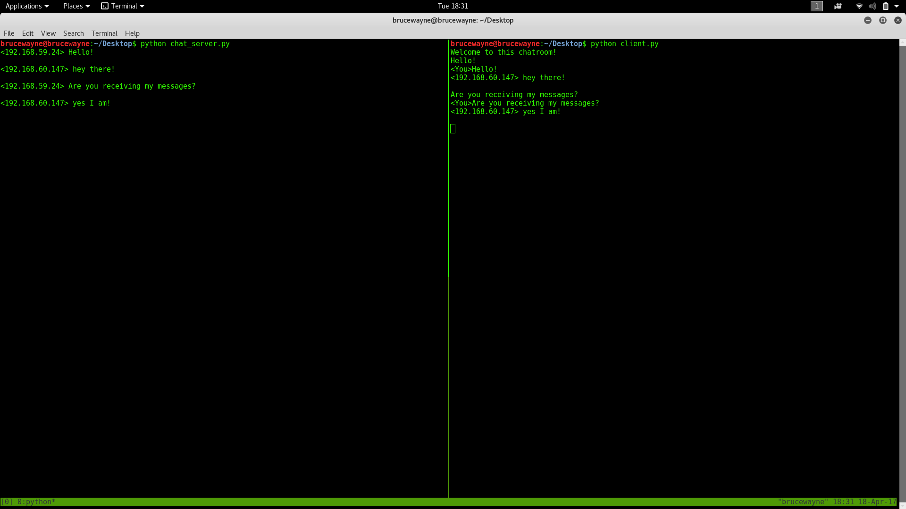
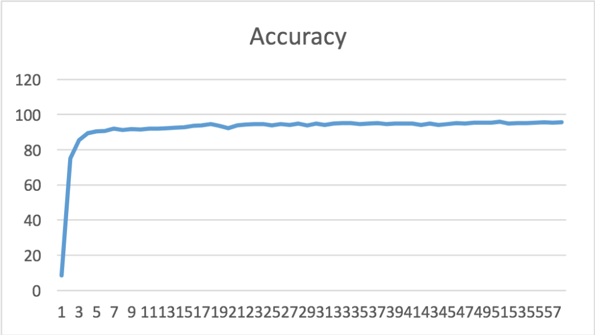

Internet Relay Chat Room
This system employs a central server which ''relays'' messages that are sent to it to other connected users.
Users can join rooms, which are groups of users that are subscribed to the same message stream. Any message sent to that room is forwarded to all users currently joined to that room. User can list all the members in the room and all the rooms current existence.
Users can also send private messages directly to other users or join multiple rooms at the same time.

Check it on github
Hand Written Digit Recognition System
I implemented this Hand Written Digit Recognition System by three layers neural networks.
Each layer contains one bias node to adjust my training and they are all fully connected to the next layer.
The values produced by forward propagation, but the node coefficients are update by backward propagation.
After trained by 60000 images, the model performs a 95% accuracy on 10000 testing images.

Check it on github
Artificial Intelligence Projects
The first project is solving 3*3 matrix problem. We are only allowed to exchange one number for one step.
Our goal is to sort the matrix in order with the minimum steps. I implemented the solution by A* algorithm
and BFS algorithm. Finally, I found that A* solves the problem better. The second project is solving 8 queens
problem. I implemented the solution by genetic algorithm and optimized the numbers of population and mutation
possibility.
 Check it on github
Check it on github